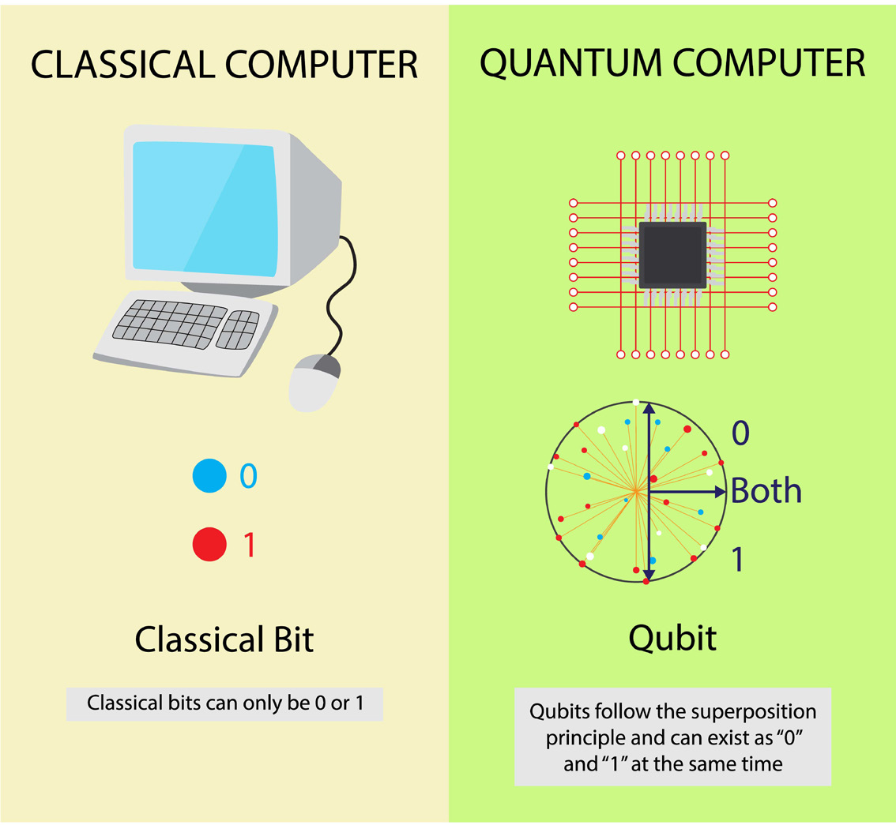
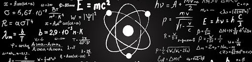
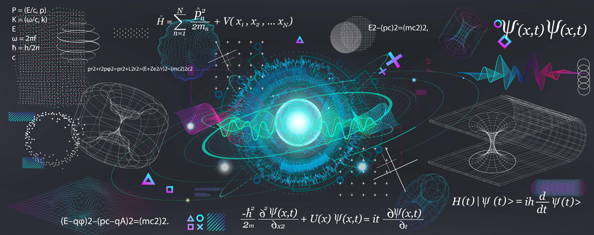
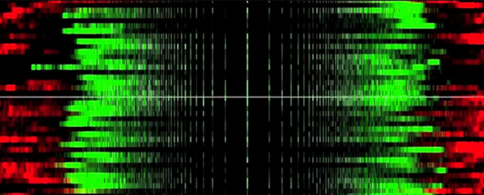
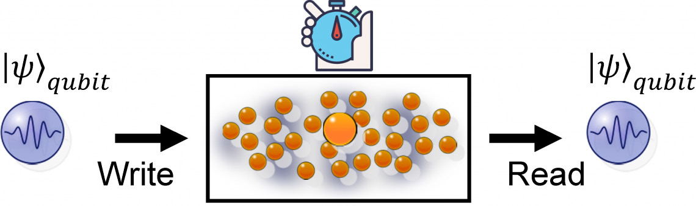
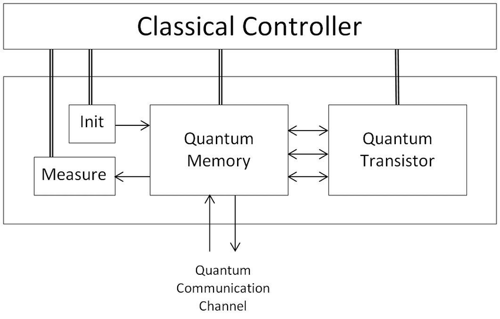
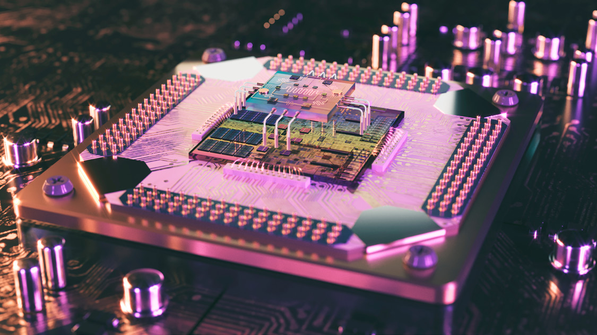

Comparing quantum and classical computing is a little like comparing apples and oranges. The two share a name, "computer," and a goal, "compute," but underneath they obey different physics, store information in different ways, and excel at different problems. Classical computing as we know it will not go away. We will always need the direct, deterministic answers that classical machines provide. As quantum computing matures, though, it has the power to reshape entire industries, from drug discovery to logistics to cryptography.
This chapter sets the two paradigms side by side. It looks at how a qubit differs from a bit, how quantum mechanics turns into a computing resource, what "memory" means when the thing being stored is a fragile quantum state, and how a quantum processing unit differs from the CPU at the heart of every laptop. The point is not to declare a winner. It is to understand each tool well enough to know when each one earns its place.
At the very heart of a classical computer are a few plain facts. It stores data. It needs human instruction, in the form of programming, to do anything useful. It has no intelligence of its own, no feelings, and no ability to learn on its own. It is a beautifully fast, beautifully literal machine that does exactly what it is told, billions of times a second.
A classical computer encodes everything in bits, each of which is either a 0 or a 1. Quantum computing replaces the bit with the quantum bit, or qubit. A qubit can be 0, can be 1, or can occupy a superposition of both at once, a state in which it carries a weighted blend of the two possibilities until it is measured. To run a meaningful computation, many qubits are held together in a quantum-coherent state, entangled so that a change to one qubit can influence the others. This shared, correlated state is the engine of quantum computing, and it is also the reason quantum machines are so hard to build.

The headline difference is how the two scale. A classical computer with N bits represents one of 2^N possible states at any given instant, and to explore many of those states it must step through them more or less one after another. A quantum computer with N qubits can hold a superposition spanning all 2^N states at once and operate on that entire superposition in parallel. A rough way to picture it: where a small classical register might let you check one combination per step, an N-qubit quantum register lets a single quantum operation act across 2^N amplitudes simultaneously. With 10 qubits that is 1,024 amplitudes. With 50 qubits it is more than a quadrillion.
A word of caution lives inside that picture. The exponential 2^N is the size of the state space the qubits can represent, not a free pile of answers you can read out. Measurement collapses the superposition to a single classical result, so a quantum algorithm has to be cleverly designed to steer probability toward the answer you want before you measure. The advantage is real, but it is the advantage of a different kind of machine, not a faster version of the same one.
A few facts frame where quantum computing stands today. Around fifty qubits was long treated as the rough threshold at which a quantum computer could, in principle, tackle problems that would take a classical machine an impractically long time. Quantum computers can attack problems such as factoring very large integers, the basis of much modern encryption. They are also exceedingly difficult to engineer, build, and program, and they must contend with noise that can rapidly derail a calculation. Many designs must be kept at temperatures near absolute zero, roughly -450 degrees Fahrenheit, to keep their qubits stable.
That difficulty has a name: decoherence. Qubits held in a coherent, entangled state are extraordinarily sensitive to their environment. Stray heat, vibration, electromagnetic interference, and even fundamental quantum fluctuations cause the coherence to "leak out," randomizing the qubits and corrupting the computation. Keeping every qubit coherent long enough to finish a useful calculation is the central engineering battle of the field, and it is why precise control and measurement hardware matters so much.
Going Deeper - 2^N is a state space, not a stack of answers
A common misconception is that an N-qubit machine simply does 2^N calculations in the time a classical machine does one. The truth is more subtle and more interesting. The qubits hold a superposition over 2^N basis states, and quantum operations transform all of those amplitudes together. But you only ever measure N classical bits at the end. Quantum speedups come from algorithms, such as Shor's and Grover's, that use interference to amplify the amplitude of correct answers and cancel the wrong ones before measurement. Without that interference structure, the exponential state space buys you nothing you can actually read.
How fast will this transition arrive? Slowly, then suddenly, and unevenly. A widely cited 2020 McKinsey analysis estimated that by 2030 only a few thousand quantum computers would be operational, and that the hardware and software needed for the hardest problems might not arrive until 2035 or later. The years since have brought faster progress than many expected, particularly in error correction (covered in Chapter 9), but the broad shape holds: quantum and classical computing will coexist for decades, with each handling the work it does best.
In the meantime, most people will reach quantum computers the same way they reach any large machine they do not own: through the cloud. Providers such as IBM, Amazon Web Services, Microsoft Azure, and Google offer access to real quantum hardware over the internet, so researchers and developers can experiment without building a cryogenic lab of their own. (Verify provider list against current offerings before publication.)
Quantum computing rests on quantum mechanics, the branch of physics that describes how matter and energy behave at the scale of atoms and subatomic particles. It is the foundation of essentially all modern physics, including quantum chemistry, quantum field theory, quantum information science, and the quantum technologies now reaching the market.

Classical physics explains the everyday world in terms that match our intuition: balls roll, water flows, planets orbit. It works extraordinarily well at human scales. But at the very large (relativity) and the very small (the atomic and subatomic), classical physics develops glaring inconsistencies it simply cannot explain. Resolving those inconsistencies drove two of the great revolutions of twentieth-century physics, the theory of relativity and quantum mechanics, the latter taking shape from about 1900 onward.
Quantum mechanics is used to calculate, with great precision, how light and matter actually behave. Light can act like a stream of particles and also like a wave, while matter built from particles, electrons and atoms, can exhibit wavelike behavior. Quantum mechanics describes light and other electromagnetic radiation as coming in discrete units called photons, and it predicts the energies and intensities of those beams. A single photon is a quantum, the smallest observable unit of the electromagnetic field.

Two features of quantum mechanics matter especially for computing. The first is quantization. Properties that look continuous in classical mechanics, such as position, speed, and angular momentum, can in fact only take certain discrete, allowed values. The gaps between those values are so tiny that the "steps" only become visible at atomic scales. The second is Heisenberg's uncertainty principle: the more precisely you pin down one measurement, the less precisely you can know its complementary partner. You cannot have perfect knowledge of both a particle's position and its momentum at once. These are not limits of our instruments. They are properties of nature itself, and they are exactly what give qubits their power and their fragility.
Quantum mechanics became a formal branch of physics in the early 1900s, but it took until the 1970s for quantum mechanics and information theory to merge. In the 1980s, physicist Richard Feynman made the argument that crystallized the field: a computer built on classical logic cannot efficiently simulate quantum phenomena, because the cost of tracking all those interacting amplitudes explodes. A computer that was itself quantum, configured to simulate other quantum systems, would not hit the same wall. That insight reframed quantum mechanics not just as something to study, but as something to compute with.
There is a fundamental reason harnessing quantum mechanics for computing is so hard, and we have already touched on it: noise. Random fluctuations, whether from heat in the qubits or from deep quantum-mechanical processes, can flip or randomize a qubit's state and derail a calculation. For a long time it was assumed quantum computers would remain stubbornly error-prone, usable only with algorithms that tolerate a lot of mistakes. A growing body of research into measuring, characterizing, and correcting errors is changing that picture.

A concrete example shows the trend. In August 2020, researchers at the University of Sydney demonstrated a technique that produces a detailed, accurate picture of noise across a network of qubits, and that scales to as many qubits as needed. They described their algorithm in Nature Physics and argued it was the first protocol immediately applicable to characterizing error rates and correlated errors in present-day devices with large qubit counts. (Verify citation and claim before publication.)
The challenge they solved is an exponential one. When individual qubits interact, the number of possible interactions grows exponentially with the number of qubits. The team devised shortcuts and simplifications that focus on the most important interactions, keeping the calculation tractable while remaining precise enough to be practically useful. Their simulations suggested the approach could be applied to a machine as large as 100 qubits without the math becoming intractable. Work like this, turning the noise itself into something measurable and addressable, is part of what lets quantum computing keep advancing at speed.
Going Deeper - Why Feynman's argument still matters
Feynman's 1980s point was not just a clever observation. It is the economic case for the entire industry. Simulating a quantum system of n particles on a classical computer can require resources that grow exponentially in n, because you have to track a state vector with exponentially many components. The molecules a chemist most wants to model, catalysts, drugs, novel materials, are precisely the ones that blow past classical limits. A quantum computer represents those states natively, in physical qubits, which is why chemistry and materials science are among the most credible early applications.
It helps to map quantum systems onto terms borrowed from classical computing: memory, input/output, and processors. The mapping is loose, because the underlying physics is so different, but it gives us a useful scaffold.
An ordinary computer stores information as strings of 1s and 0s in memory that can be read and rewritten at will. Quantum memory instead stores a quantum state, holding qubits for later retrieval. Crucially, a state held in quantum memory can be a superposition, which gives quantum algorithms a flexibility that classical storage cannot match. The catch is that the state is fragile, so quantum memory is as much about preservation as it is about storage.

Storing a quantum state does not have to be perfect to be useful. Rather than demanding flawless storage, fault-tolerant quantum error correction makes a memory good enough as long as the fidelity of a memory operation, a memory "gate," stays above a defined performance threshold. Above that threshold, errors can be detected and corrected faster than they accumulate. Below it, they pile up and overwhelm the computation. Quantum memory of this kind is essential for building quantum machines that can run long, complex programs and for quantum communication that has to relay states over distance.
Quantum memory comes in several flavors, distinguished mainly by the physical system that holds the state:
Input and output look different in the quantum world too. A quantum computer's I/O is a physical process of manipulating qubit states according to machine states, so that quantum information can propagate through the device. Classical I/O models are, by quantum standards, wasteful: they store and carry along information that is not actually needed for correct future computation. Quantum models tend not to retain that surplus history, which both saves resources and, in some formulations, is required by the underlying physics.
In a classical computer, data processing happens in the Central Processing Unit, the CPU. A CPU is built from an Arithmetic and Logic Unit (ALU), processor registers, and a control unit, all working together to execute instructions on bits. In a quantum computer, the analogous component is the Quantum Processing Unit, the QPU, made up of many interconnected qubits.

A QPU is, in effect, a small quantum computer that performs quantum logic gates on a defined number of qubits. These processors span a wide range of sophistication. At the simple end are "end nodes" built from little more than beam splitters and photodetectors. At the complex end are processors that can also act as repeaters, storing and retransmitting quantum information without disturbing the underlying state. The state being held might be the relative spin of a particle in a magnetic field, or the energy level of an electron, depending on the platform.

There are several physical platforms for building a QPU, and Chapter 7 examines them in depth. One promising approach uses ion traps, where radio-frequency fields and layered electrodes confine ions. In a multispecies trapped-ion network, photons entangled with a "parent" atom can be used to entangle separate nodes, letting a larger machine be built from smaller, linked modules. Whatever the platform, most architectures must reconcile two demands at once: qubits that can be individually addressed and controlled, and the cryogenic temperatures the quantum core needs to stay coherent.
That reconciliation is where quantum and classical computing meet most physically. The interface between the quantum processor and its classical "backend," the control and readout electronics, is a critical element of whether a design can scale. Today's reliance on coaxial cabling, one or more cables per qubit, running from room-temperature electronics down into the cryostat, becomes impractical as qubit counts climb into the thousands. Solving that wiring and signal-delivery bottleneck is an active area of engineering, and it is precisely the kind of problem where precise signal sources and measurement instruments earn their keep.
BNC in Practice - Signals at the quantum-classical boundary
Every qubit, on every platform, has to be initialized, manipulated, and read out by classical electronics. That means clean, precisely timed signals: stable frequency references, low-noise pulse and gate timing, and accurate triggering between the control system and the quantum core. These are exactly the measurement and signal-generation challenges Berkeley Nucleonics has worked on for decades in adjacent fields. As quantum processors scale and the control interface becomes the bottleneck, the discipline of precise, low-noise instrumentation moves from a supporting role to a central one. (Specific product applicability: verify against current datasheet.)
Take it interactively. The quiz lives on its own page with hidden answers - write your attempt first (even four characters works), then reveal. Self-graded. About 10 minutes.
Or read the questions and answers inline below (preserved for print and offline use).
[1] J. M. Smith et al., "A Game Plan for Quantum Computing," McKinsey & Company, 2020. Verify before publication.
[2] R. P. Feynman, "Simulating Physics with Computers," International Journal of Theoretical Physics, vol. 21, 1982. Verify before publication.
[3] University of Sydney researchers, scalable qubit-noise characterization protocol, Nature Physics, 2020. Verify citation, authors, and claims before publication.
[4] M. A. Nielsen and I. L. Chuang, Quantum Computation and Quantum Information, Cambridge University Press. Verify edition and page references before publication.
[5] Cloud quantum-computing access offerings (IBM, Amazon Web Services, Microsoft Azure, Google). Verify current provider list and capabilities before publication.